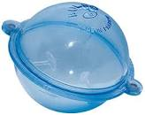
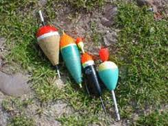
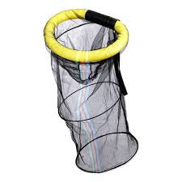
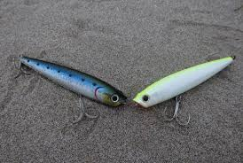

|  |  |
|  |  |
La pesca deportiva es la actividad deportiva relacionada con el ámbito de la pesca. Esta se realiza a nivel personal o en equipo de personas por ocio o competencia. Hay diversas técnicas para realizarla y también existen competencias que pueden ser realizadas en ríos, lagunas, orilla del mar y mar abierto.
La pesca con mosca ahogada, también denominada "pesca a la leonesa", "con mosca de León", "con bulle d'eau", "con bulbo" o "con buldo", es una técnica tradicional de pesca a mosca (generalmente para la pesca de truchas) que emplea unos aparejos muy característicos de varias moscas ahogadas y una boya transparente de plástico que se rellena de agua. Se manejan con cañas de lance ligero armadas con carretes de lance y sedal de nylon (generalmente con secciones entre 0,18 y 0,20 mm). Este elemento es el que da origen al nombre "bulle d'eau" (bola de agua), y se mantiene flotando a media altura sobre la superficie del agua, lo que permite a las moscas ahogadas navegar a la profundidad adecuada, sumergidas unos pocos centímetros bajo la superficie. Además da peso para permitir el lance y mantener la tensión del sedal durante la recogida.